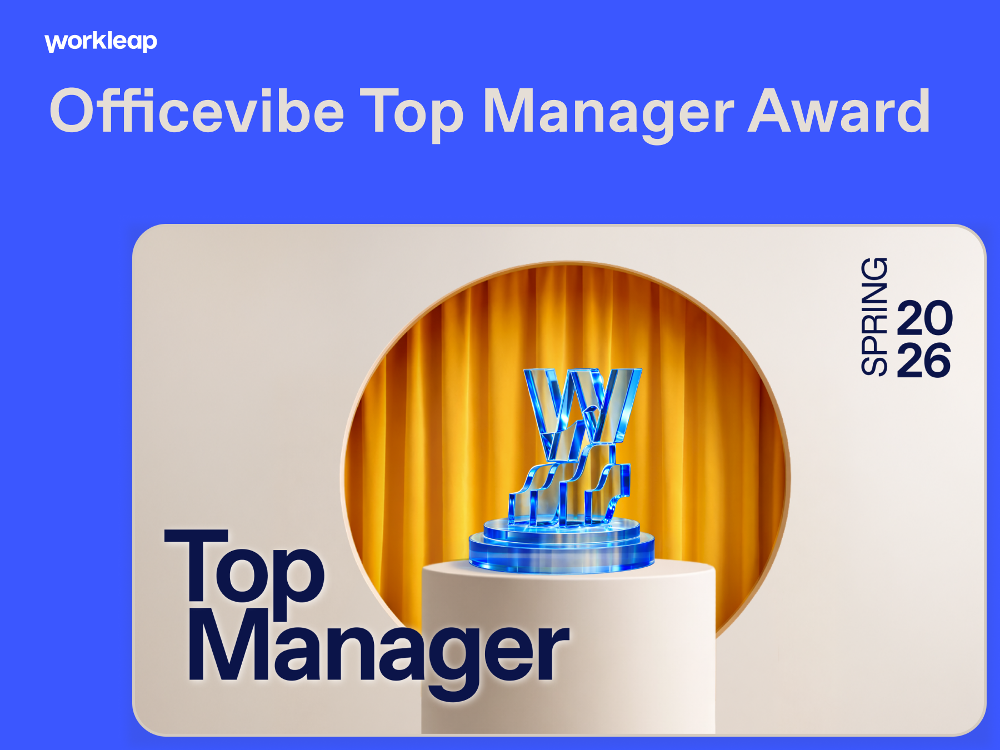
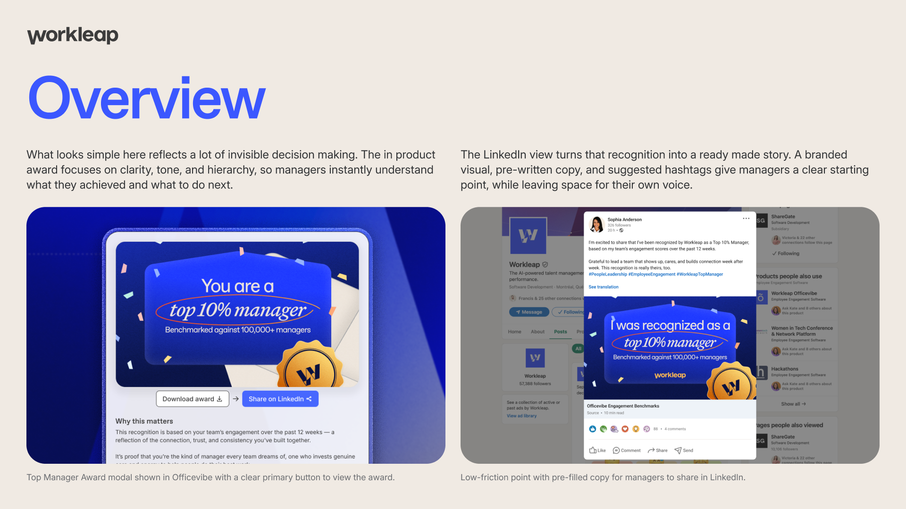
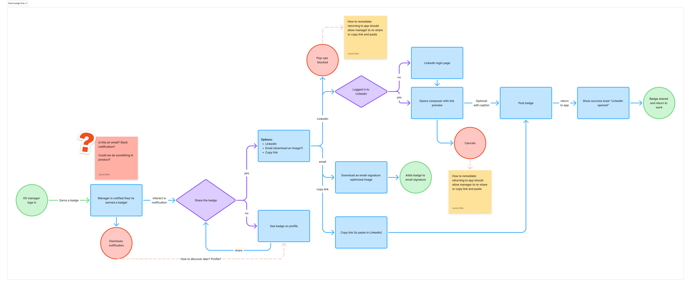
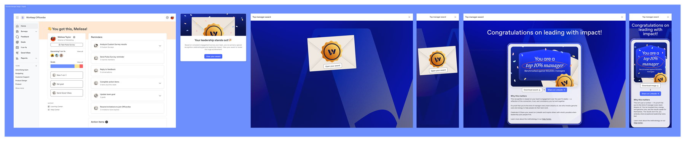
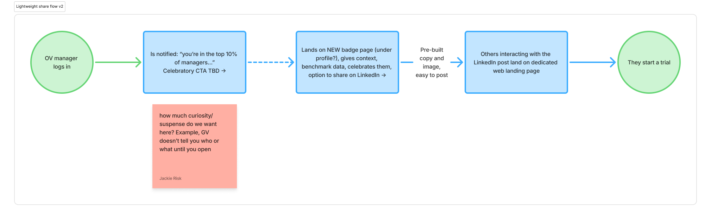
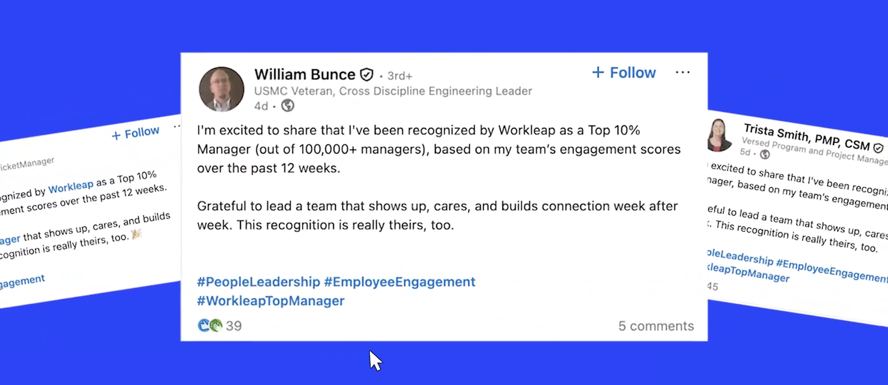
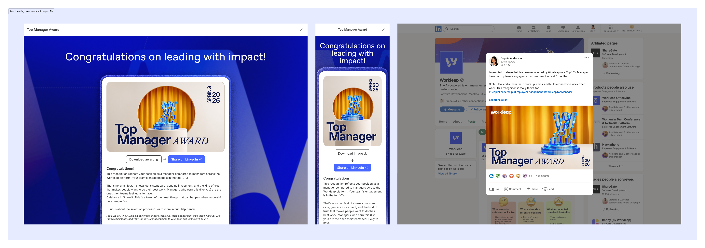

Officevibe Top Manager Awards
Turning recognition into organic reach: how a 2-week design sprint generated 150k impressions without paid spend.

TL;DR
Sole designer on a 2-week sprint to build an in-product recognition experience for top managers. Exceeded every target metric: 69% engagement rate (vs. 60% goal), 6.9% LinkedIn share rate (vs. 3–5% goal), ~150k organic impressions. Customer demand for expanded recognition tooling confirmed this as a scalable growth pattern, not a one-off experiment.
Overview
Workleap Officevibe helps managers build better habits with their teams. We saw an opportunity to also celebrate managers themselves, and turn that recognition into authentic advocacy for Workleap.
In a little over a month after launch, the Top Manager Awards experience delivered:
French posts represented fewer impressions but 1.5x higher engagement than English posts. Image posts performed about 7% better on average. This project validated that a well crafted, emotionally resonant UX pattern can generate meaningful organic reach and deepen customer loyalty without paid spend.

Understanding the Problem & Opportunity
Problem
Officevibe already created positive outcomes for teams, but:
- We did not have strong, repeatable moments of recognition for people managers.
- Marketing needed more product-led brand awareness, not just campaigns.
- We had little proof that "celebration moments" could move engagement or advocacy.
Opportunity
Use our existing engagement data to identify top performing managers, then:
- Give them a shareable award that feels earned and personal.
- Turn that experience into a viral, low-friction loop from in-product recognition to social proof and brand awareness.

Early ideation: the PM brought an initial concept, which I pressure-tested through collaborative review and redesigned into the final flow.
Goals & Hypothesis
I partnered with the PM to define goals and success metrics.
Goals
- Drive high engagement with the award experience.
- Convert a meaningful slice of managers into public advocates.
- Generate measurable, organic brand reach.
- Learn whether this mechanic is worth scaling or expanding.
Hypothesis
If we celebrate top managers in-product with a shareable, branded award, then a significant portion will share on LinkedIn, which will increase brand visibility and strengthen emotional connection to Workleap.
Target metrics
- ≥60% award open rate
- 3–5% of exposed managers post publicly
- Healthy social engagement (interactions and impressions)
My Role & Responsibilities
As the sole product designer on Growth, I:
- Co-led experiment design with the PM and Marketing: defined entry rules, eligibility, rollout, and tracking.
- Owned the end-to-end UX and UI: modal flow, award layout, copy, and LinkedIn share pattern.
- Ensured alignment with Workleap's product content guidelines and design principles like Relentless Simplicity and Design for Meaningful Moments.
- Instrumented analytics with Engineering: from exposure through open, share click, and outbound events.
- Facilitated cross-functional reviews and sign-off with Growth PM, Marketing, Customer Success, and Brand.
Design Approach & Key Decisions
a. Make the moment feel earned and special
The award surfaced only for managers who met clear performance criteria, so it felt like recognition, not a campaign. Modal copy was short, warm, and direct, using the "Empowering Guide" voice from our product content system.

b. Optimize for fast comprehension
Applied best-practice content and UX guidance for dialogs: single clear primary action, obvious dismissal, minimal secondary choices to reduce cognitive load. Visual design emphasized the manager's achievement, with a simple "Share your award" action.
c. Design a frictionless share loop
One clear path: open award → share to LinkedIn. Pre-filled LinkedIn copy with a friendly prompt and #WorkleapTopManager, but allowed full editing for authenticity. Included a strong, brand-consistent image that works in the LinkedIn feed and on mobile.

d. Build in measurement from day one
Events for exposure, open, share intent, and click-through were implemented as part of the initial release. Partnered with Marketing to estimate impressions and reach using LinkedIn post analytics, so we could talk about brand impact, not just in-product events.
Results & Impact
Engagement and advocacy
69% of managers opened their award, beating our 60% target. 6.9% of exposed managers posted on LinkedIn, out-performing typical "share your badge" patterns in SaaS and confirming that the design and messaging hit the right emotional note. Posts generated 8,438 interactions with an average of 52 interactions per post, a strong signal of relevance in managers' professional networks.
Brand visibility
We estimate 150,000 impressions and about 150k brand touchpoints across managers' networks with zero media spend. This effectively turned a one-time product feature into a product-led brand campaign powered entirely by our users.
Customer sentiment
Customer Success reported overwhelmingly positive feedback. Customers requested:
- Notifications for managers-of-managers
- Internal reports on top managers
- More tools to highlight awards to executives and HR leadership
These signals suggest the experience did more than generate social posts. It created a new kind of recognition asset that customers want to integrate into their own culture and workflows.

A sample of real manager posts shared publicly with #WorkleapTopManager.
Limitations & Learning Points
I treat this as a strong first iteration rather than a finished system.
What I'd push further
- Short-term impact on signups was hard to attribute. Aside from a few leads mentioning the awards, we don't have clear evidence this v1 directly moved new-business KPIs in the first month.
- Posts with images performed only about 7% better on average than posts without, less of a lift than predicted. This suggests narrative and timing matter more than visuals alone. For v2, I'd test copy variations more aggressively than visual ones.
Key learnings
- Recognition is a powerful growth lever. High open and share rates confirmed that when recognition feels real and earned, users are willing to amplify the brand.
- Design for both emotion and measurability. By combining emotional UX with tight instrumentation, I could speak confidently about engagement and reach, not just aesthetics.
- Next iterations should link more directly to product outcomes. Introduce referral links, unique award landing pages, or "Try Officevibe" CTAs attached to posts. Explore follow-on experiences like recognition dashboards for HR, which customers are already asking for.
- Segmenting by language and culture is worth exploring. French posts had fewer impressions but 1.5x higher engagement, hinting at opportunities for more localized copy and visuals in future rounds.
Version 2
A second iteration of the Top Manager Award was designed and shipped following v1's success. The updated award illustration was created by a marketing designer; my role was UX continuity: ensuring the new visual worked within the existing modal flow, share pattern, and brand system.

The marketing team was significantly reduced between v1 and v2, which meant the launch had a smaller promotional footprint. Outcome data is still being gathered.